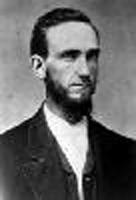
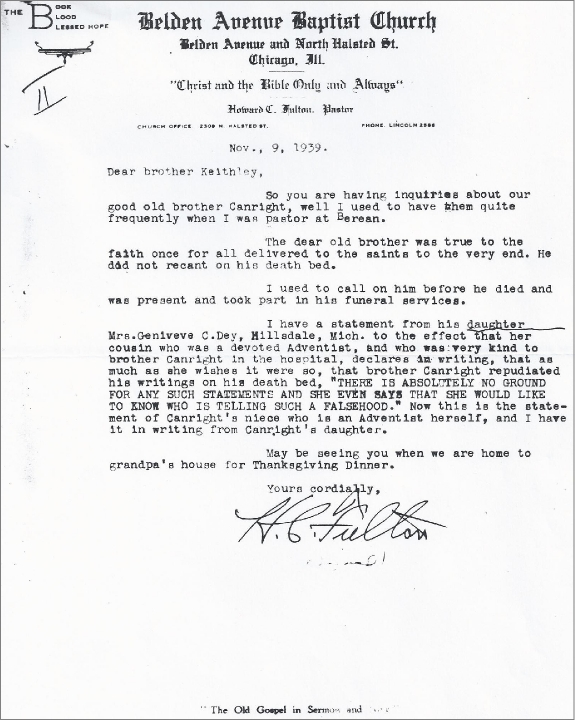

D. M. Canright: Not a lost man!

D. M. Canright (1840-1919)
Canright was a pastor of the Seventh-day Adventist Church, which he renounced and from which he withdrew his membership.
Seventh-day Adventists through the years have discredited Canright because he challenged Ellen G. White's (EGW) teachings and for his leaving the Church. They have claimed that he said, "that he wanted too come back but it was to late and he was a lost man."
When an Adventist is contemplating withdrawing their membership from the Adventist denomination, this comment is sometimes thrown in their face—"look at Canright"—when he left the church he was a lost man and wished he could come back, so you better not leave.
Did Canright really say these things, "that he wanted to come back but it was to late and he was a lost man"?
Did D. M. Canright die believing he was a lost man and regretting leaving Adventism?
- No, he did not. He refuted the lies of the Adventists in his book Seventh-day Adventism Renounced, in the chapter, "My Present Standing", p. 9.
- Yes, according to Carrie Johnson. She was Canright's secretary and tells the story of D. M. Canright fifty years after his death in her book, "I was Canright's Secretary. "He (Canright) said he wished he could come back to the fold as I suggested, but after long, heartbreaking moans and weeping, he said: "I would be glad to come back , but I can't. It's too late! I am forever gone! GONE!" —"I Remember," pp. 119,120. I was Canright's Secretary, Carrie Johnson, 1971, p. 101.
Of course Canright could not defend himself against the Johnson statements, as she wrote her book fifty years after he died. However the following documentation shows that Carrie Johnson, for whatever reason, is not in agreement with the statements Canright made refuting these same allegations by Adventists after he left the denomination and by those that knew him and were with him at his death bed.
When a prominent man leaves one church or party and joins an opposing one and gives his reasons for it he may expect that his old associates will reply to him. I expected no exception in my own when I renounced Adventism, so have not been disappointed. The great majority of my former brethren have been very friendly to me and treated me kindly. A few, a very few, have done otherwise. Their object has been to counteract my influence against what they regard as God's work. These few have started the report that I have been sorry I left Adventism, that I have said so, have tried to return to them, have confessed that my book was false, and some have said that I was very poor, a physical and mental wreck, with no hope of salvation, etc. These reports are accepted as facts by honest brethren and repeated till they are believed by many Adventists the world over. I have denied them in every possible way, but they are still believed and repeated, and doubtless always will be. I leave God to judge between us.
I now and here for the hundredth time solemnly affirm before God that I renounced Adventism because I believed it to be an error. I have never once regretted that I did so, have never intimated to any one that I have had the least desire to go back to that people. It would be impossible for me to do such a thing and be an honest man.
I am now (1915) well in body and mind, have a good home worth $10,000 or $12,000, and have four grown children, of whom any man would be proud. On leaving the Adventists I joined the Baptist church at Otsego, Mich., and became its pastor till it was built up into a prosperous church. They have been my ardent friends to this day. Twenty years ago I moved to Grand Rapids, Mich., took a new mission and built this up, organized it into a church which has become one of the strong churches of the city, having several hundred members with a fine edifice. Have twice been its pastor, always an active member. At present I teach a large adult Bible class every Lord's day and often preach for them. Have always been in perfect harmony with the church. They honor me as their father, consult me on all important matters, and hotly resent the foolish reports which some circulate concerning me.
Out of scores of printed testimonies before me I select only a few which speak for themselves. —Seventh-day Adventism Renounced by D. M. Canright, p.9.
Letter from E. S. Ballenger to Harry S. Weaver
Your letter of the 24th just arrived, and I will give it the preference above scores of other letters in the pigeon hole.
I am enclosing a few copies of the leaflet on the, sanctuary question. I will be glad to supply you more if you can use them.
Yes, Dr. Chas. E. Stewart is the author of the Blue Book. He is second to Dr. Kellogg in the medical department of the Battle Creek sanitarium. In fact he was appointed receiver by the court when that institution went into the hands of the receivers. I understand however that Dr. Stewart and his family have gone back into the Adventist church. So he may not be as free to give out information as he was at the time he wrote this book.
You will find him a very pleasant man and he will cooperate to give you information if he feels so inclined. The book was not put out as a sanitarium document. Dr. Kellogg advised very strongly against publishing it.
And so Elder Daniells is at his old occupation. I wonder how he can look an honest man in the face, knowing what he does about Mrs. White and her testimonies. But we will have to let God take care of him. He may be perfectly honest, but I can't help but consider his position similar to the Jesuits. Believing that "the end justifies the means."
I was very closely acquainted with Elder D. M. Canright for a number of years before he passed away. I was entertained in his home at Grand Rapids and we entertained him in our home while living in Battle Creek.
Some where about 1914 he came to Battle Creek to attend a general gathering of the Adventists. It was in the winter time. He called on the local Baptist pastor and as he came from the ministers home he slipped on the icy steps, fell and broke an arm and a leg. He was taken to the sanitarium, where under their care, his arm healed quickly. But the leg caused much trouble. Until finally they had to amputate it. This was such a shock to him that he came very nearly dying. At that time I was living just across the street from the hospital and called on him frequently. He became so low that he expected to die. He called to me to come to his death bed, as he supposed, and we all thought it was the end.
But he recovered and after that wrote the Life of Mrs. White. When he left the Adventists he joined the Baptist church and united with the church of that denomination in Grand Rapids. He was highly respected from his first connection with them. The whole church turned out at different times to honor him on his birthday and on his return from some of his lecture tours.
When he located in Grand Rapids, he bought a little farm just outside of the city. The city spread rapidly in his direction. He divided up his farm into city lots and sold part of it to good advantage. So that he lived comfortably with a good income until the end. His son did the farming and they lived together. When his health finally began to fail, his older daughter, Mrs. Day, took him to her home at Hillsdale, Mich, and cared for him until the end.
I had the privilege of spending an afternoon with him about a week or ten days before he died. I asked him definitely regarding his hope and he expressed great confidence in the Lord and in the assurance he had of being accepted. He was happy and cheerful and talked freely and I remember well a most pleasing joke that he related to me.
As I said before I was in frequent contact with him and I always found him cheerful, happy and very studious. Before his accident., my Brother and I spent two afternoons with him. Part of the time discussing our differences. We discussed the Sabbath question very freely. He made no attempt to defend the observance of Sunday. He freely admitted to us that the Bible taught no other Sabbath excepting the seven day.
He said that he had been taught from his first connection with the denomination that if one gave up the testimonies, they were lost. And they might as well give everything up. He said he was so disgusted with the deceptions of Mrs. White, James White and other leaders that he wanted to wash his hands entirely clean of the whole system. He died very quietly and peacefully and never made any confession or expressed any regrets regarding his course after leaving the denomination.
Letter from E. S. Ballenger to Paul Barker
I was very much interested in your letter, especially that relating to the statements made by the president of the conference to some of the leaders of your church.
I am very glad that Pastor Spindle read the "Prophet Special." You may tell him that I will give him ten dollars if he will find a single mistake in the statement of facts in that issue with the exception, of the statement that Mrs. White was $90,000 in debt when she died. Her indebtedness, as reported to a County Recorder, was a little short of 90,000. Aside from that there isn't a single mistake in that issue regarding the denomination, its leaders, or Mrs. White. Carchich, president of the conference, of course, told them the current stuff that is passed out from headquarters regarding D. M. Canright. He may be honest in telling that stuff, but he is wide of the mark and far from telling the truth.
I'd like to know what he means by saying that the General Conference has been trying to "smoke me out." I haven't been in hiding the least degree since, I have been publishing the mistakes of SDAs. Nothing would please me more, in my conflict with SDAs, than to have them bring suit against me for libel, or for defaming their character. You are at liberty to pass on to these representatives that I will gladly donate $50 towards paying expenses of bringing suit against me, if any denominational organization will proceed to punish me through the law. If they doubt my good will, I'll send you a check for fifty dollars and you can cash it, and stand ready to hold if for a trial as to whether I am guilty of misrepresenting any feature of the denominational creed or their practice.
I do not approve of Canright's course of action. I can't remember when I didn't know him. From a child I used to hear him preach at our camp-meetings and he was a very strong public speaker, but he always dwelt on doctrinal subjects. I was intimately acquainted with him for a number of years before he died. He has been grossly, misrepresented. If the SDAs would confine their criticism of him for his attitude toward the Sabbath and toward the nature of man, they would be blessed of the Lord, but when they try to defame his character and misrepresent him, they are at fault.
I spent an afternoon with D. M. Canright, just a week before he died and I had a very intimate conversation with him. He felt perfectly ready, to meet his Lord and was expecting that the time of his end was near at hand.
Many grossly false reports have been circulated regarding him. He died at the home of one of his daughters. After his death, two of his daughters came to see me. They were greatly incensed at the report that their father had recanted before he died. They were in a frame of mind to bring suit against the denomination for misrepresenting their father. I feel quite certain that they would have prosecuted the leaders if I had recommended it, but I discouraged them from going to law about the matter.
He may have said a good word for Mrs. White, I don't know about that, but for his recanting, or considering himself as a lost man, is made up of a whole lie, made up out of unholy desires.
I did not get the charges I published against the SDAs from D. M. Canright. I got them wholly from books published by the denomination. I have in my library the first publication put, out by the pioneers, "A Word to the Little Flock." I also have a copy of the first periodical they published, "Present Truth.." I have The Advent Review" and four volumes of "The Review and Herald," together with the four volumes of Spiritual Gifts. I also have the first edition of "Early Writings" printed in 1851.
I never read D. M. Canright's first book against Seventh-day Adventists. I did read two or three chapters in answer to a question that was written me, dealing with the Sabbath. I read Canright's chapters in regard to the Sabbath --The only portion of that book that I ever read.
I did get something from D. M. Canright. He gave me the originals of six letters from Uriah Smith and five letters from James White while he was still a minister with the denomination. Both of these, James White and Uriah Smith, questioned the inspiration of Mrs. White's writings.
I stand ready to come at my own expense and meet with the president of the conference in regard to the things that I publish, if he will meet me before any Seventh-day Adventist church.
I have a standing offer to any official of the SDA, denomination or anyone that the denomination will indorse, to use at least one-half of any number of issues of "Gathering Call" to point out to my readers wherein I am misrepresenting them, or wherein I am teaching error.
I stand ready to meet any of the facts that I have published in the Gathering Call, or in any of the literature which we circulate. What I have published is the truth, and the fact that they refuse to meet me in public debate or to reply to me through their papers is evidence that they dare not enter into discussion with me because of the facts at my command.
You are at liberty to use these facts and I shall stand ready to glorify you in your use of them.
Letter from Pastor H. C. Fulton of the Belden Avenue Baptist Church to Brother Keithley
Nov. 9, 1939 letter from Pastor H. C. Fulton of the Belden Avenue Baptist Church. He writes to brother Keithley that Canright was true to the end and did not recant on his death bed. The pastor tells us that he has a statement from his daughter, Mrs. Geniveve C. Day, which has it in writing from her devoted Adventist cousin that Canright as much as she wished it were so repudiated his writings on his death bed. She goes on to say, "THERE IS ABSOLUTELY NO GROUND FOR ANY SUCH STATEMENT AND SHE EVEN SAYS SHE WOULD LIKE TO KNOW WHO IS TELLING THIS FALSEHOOD. "
Note: It is cultic to believe a person would be lost because they did not believe Ellen White was a prophet or because a person choose to leave the Seventh-day Adventist Church.
Sections
Robert K. Sanders, Founder and Editor of Truth or Fables, 1997–2012
Life Assurance Ministries assumed ownership of Truth or Fables in 2012
© 2016 Life Assurance Ministries. All rights reserved.
